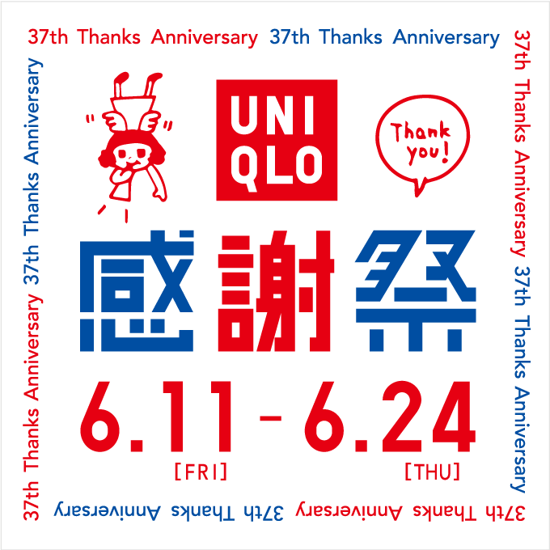
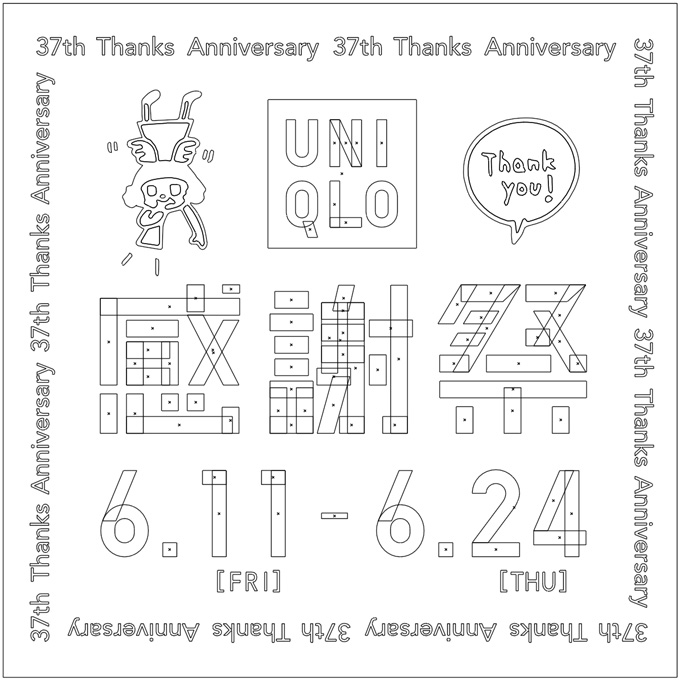
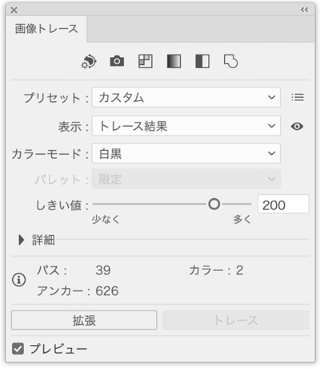

ユニクロ感謝祭
design-library.jp
 
制作ポイント
- メインの形は、長方形の組み合わせ
- 数字は、楕円形の「パスのオフセット」で複製後、パスファインダー「型抜き」でドーナツ状態にする
- 輪郭の囲みの文字は、「Avenir Next」の「Medium」
- イラストは、Photoshopで白黒2値にし、レベル補正で輪郭を飛ばしたものを、Illustratorでオートトレース
- 「しきい値」のレベルは、画像の質によって変更します
